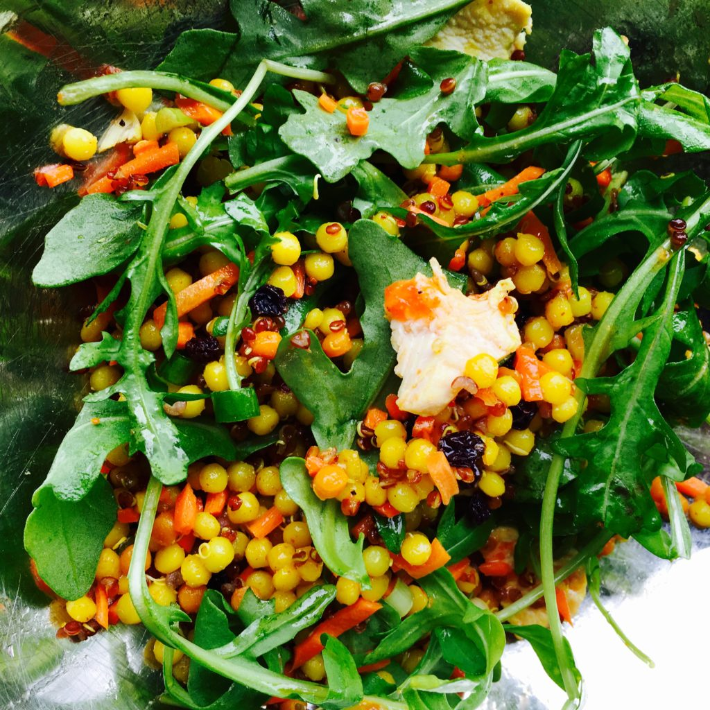

Arugula Salad with Couscous
Homepage

Description
Arugula salad with lemon chicken, israeli couscous, quinoa, and spicy pimiento dressing.
Ingredients
- 4 cups arugula lettuce leaves
- 2 cups red quinoa, cooked
- 1/2 cup carrot, finely minced
- 1/4 cup green onion, finely chopped
- Israeli Couscous
- 1 tbsp olive oil
- 1 cup Israeli couscous
- 1 tsp smoked paprika
- 1/2 tsp salt
- 1/2 tsp turmeric
- Spicy Dressing
- 1/4 cup roasted red peppers, finely chopped
- 2 cloves garlic, mined
- 1 tsp lemon zest
- 2 tbsp fresh lemon juice
- 2 tbsp seasoned rice vinegar
- 2 tbsp water
- 1 tsp sugar
- 1/4 tsp salt
- 1/3 cup olive oil
- Marinade for Chicken
- 1 lb trimmed boneless chicken breast
- 1/4 cup fresh lemon juice
- 1 tsp lemon pepper
- 1/2 tsp salt
Steps
- Spicy Dressing
- Combine roasted red peppers and remaining dressing ingredients except olive oil in container of food processor fitted with metal blade. Cover and process until smooth. Slowly pour olive oil through shoot while processor is on to incorporate.
- If you desire less pulp in dressing, pour dressing through a fine-mesh strainer placed over a bowl, pressing with a spoon to extract as much fluid as possible. Discard solids in strainer.
- Lemon Chicken
- Place chicken in heavy-duty zip-lock bag. Add marinade ingredients to bag and seal. Squeeze bag with hands to distribute marinade around chicken. Chill in refrigerator for up to 8 hours or until ready to grill.
- Remove chicken from bag and place chicken on prepared grill. Grill for 4-5 minutes per side until chicken is no longer pink and juices run clear. Allow to cool slightly. Cut chicken into slices and arrange on salad.
- Israeli Couscous
- Heat the oil in a saucepan over medium heat. Add the couscous and sauté, stirring, until toasted and light golden brown, about 7 minutes.
- Stir in the smoked paprika, salt and turmeric. Add the water and bring to a boil. Reduce the heat to a simmer, cover, and cook until the liquid is absorbed, about 10 minutes.